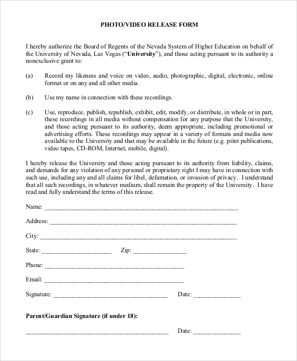

 Do-It-Yourself
Easy photo video maker with music
Join millions of people creating and sharing videos with our easy drag and drop video maker. No experience necessary.
Get Started Free ) Certified partner ofBring your photos to life with video
Looking for an easy way to turn your photos into a captivating video? Animoto is the effortless way to turn images into a video with stylish text and transitions, plus licensed music for any occasion.
Simply add your photos into our online video creation software and quickly rearrange your pictures to tell your story. Drag and drop your way to a stunning video in minutes. No video editing experience necessary!
Read more Limitless possibilitiesVideo templates that make it easy to create videos from your photos
Celebrate special momentsQuickly create beautiful personalized video greeting cards or event recaps. Wish loved ones a happy birthday, make family slideshows, send holiday greetings, and more.
Promote your businessMake video part of your marketing strategy, without adding to your workload. Use templates to introduce new products, share rave reviews, or promote sales.
Share on socialEngage followers and reach new audiences. Post quotes, create how-to videos, or tell must-share stories that'll make your viewers want to tag all their friends.
Create in minutesHow to transform your images into a video with Animoto
Choose a storyboard template or start from scratch. Upload your pictures and video clips or choose from our library of Getty Images stock. Personalize by adding your own text, colors, and logo. Upload your own music or choose from our library of licensed songs. Produce and share your video with friends, family, and followers.Make your first video today!
Create and share videos for free. Upgrade anytime for more customization.
Get started free See pricingWe want to help make amazing videos
As you begin making your own videos, we're here to help along the way! Get started with Animoto's online video maker and visit our Help Center for your answers to your questions. For ideas and inspiration for business videos, join The Animoto Social Video Marketing Community on Facebook. Our team of video experts are ready to help you grow with tips, ideas, inspiration, along with feedback on your videos.
Explore Uses Marketing video Video ad How-to video Slideshow video Social media Promo video Birthday video Animoto For Business Photography Real estate Non-profit Education Ecommerce Fitness Features Photo video maker Music library Online video editor Templates Video trimming Stock library iOS Company Support Blog Careers Press Affiliates Privacy policy Terms of use Connect© 2020 Animoto Inc. All Rights Reserved.